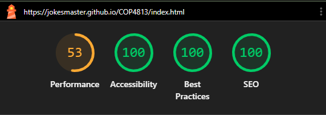
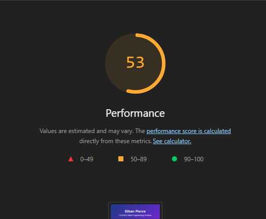
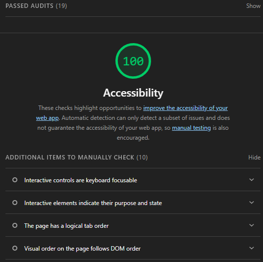
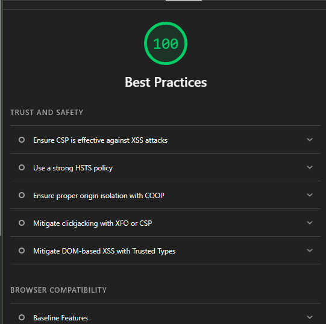
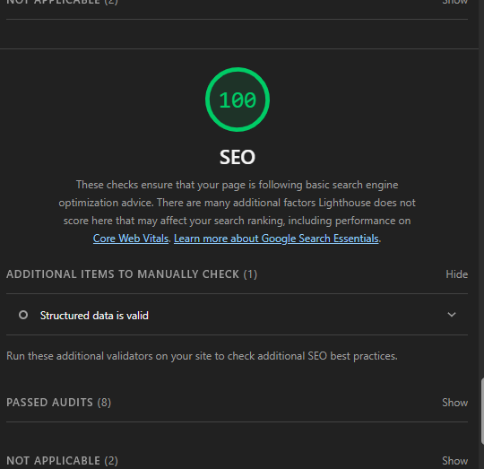

Mobile Implementation
For this assignment, I chose to use one responsive website design that works on both desktop and mobile devices instead of creating a separate mobile website.
My website uses CSS media queries to adjust the navigation, page width, spacing, images, and other page elements when the screen size becomes smaller. The navigation menu changes from a horizontal layout on desktop to a vertical layout on mobile, which makes the links easier to select using a touchscreen.
Images also resize automatically so that they do not extend outside of the screen. The same navigation choices and major features remain available on both the desktop and mobile versions of the website.
Google Lighthouse Test
I tested my main website using Google Chrome Lighthouse in Navigation mode with the Mobile device option selected. Lighthouse analyzed the website in the areas of Performance, Accessibility, Best Practices, and Search Engine Optimization.

My overall Lighthouse scores were:
- Performance: 53
- Accessibility: 100
- Best Practices: 100
- SEO: 100
Performance Analysis

The Performance score was 53, which was the lowest score in the audit. This shows that the website is functional on mobile devices, but there are still areas where loading and rendering performance could be improved.
Performance can be affected by factors such as image sizes, page resources, JavaScript, CSS, and the amount of content that must be loaded by the browser. This is the main area of my website that I would focus on improving in the future.
Accessibility Analysis

My website received an Accessibility score of 100. Lighthouse successfully passed the automated accessibility checks that were included in the test.
Some of the areas Lighthouse checks include properly structured content, alternative text, keyboard accessibility, readable page elements, and logical navigation. Lighthouse also notes that manual accessibility testing is still important because automated testing cannot detect every possible issue.
Best Practices Analysis

My website received a Best Practices score of 100. This indicates that the page passed Lighthouse's automated checks related to modern browser compatibility and recommended web development practices.
Lighthouse also lists additional security-related items such as content security policies, HSTS, origin isolation, and protection against clickjacking. These provide examples of additional areas that can be considered when developing more advanced websites.
SEO Analysis

My website received an SEO score of 100. This means the page passed Lighthouse's basic search engine optimization checks.
The website includes descriptive page titles, metadata, headings, mobile-friendly content, and structured HTML that helps both users and search engines understand the page. Lighthouse also recommends manually checking structured data when it is used.
Overall Analysis
The Lighthouse test showed that my website performs very well in Accessibility, Best Practices, and SEO, with scores of 100 in all three categories. The main area that needs improvement is Performance, which received a score of 53.
Overall, the website successfully adapts to mobile screen sizes while keeping the same navigation and content available on the desktop version. This assignment also helped me see how browser development tools can be used to test more than whether a page simply works. Lighthouse provides information about the quality, usability, performance, and structure of a website and can help identify areas that should be improved.